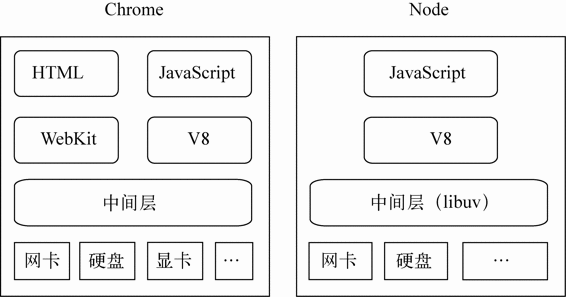

这些东西有些比较常用，有些仅知道个名称，但无论是熟悉还是陌生的，要比较精确地解释这些东西，是有一定的难度，可这些东西对前端开发非常重要，还是需要有明确的概念。
PS：内容点到即止，不然一个东西一篇文章都写不完。
整体认识
在学习方法上，对于互有联系的东西，有一个整体的印象，比起一个个琐碎的认识更为重要，所以标题上的概念，我更喜欢从整体上去认识。

PS：Chrome浏览器和Node的组件构成
从上图可以看出，Node的结构与Chrome非常相似，Node选择JavaScript为实现语言，V8为执行引擎，利用libuv实现基于事件驱动的异步架构。
名词解析
Chrome
一款网页浏览器。
V8
V8（C++开发）是JavaScript的执行引擎，它将JavaScript编译成原生机器码（IA-32, x86-64, ARM, or MIPS CPUs），并且使用了如内联缓存等方法来提高性能，运行速度媲美二进制程序。
sandbox
沙盒（sandbox）是一个 C++ 库，它允许创建沙盒进程 （在非常严格的环境中执行的进程）。沙盒进程可以自由使用的资源仅仅是CPU周期和内存。例如，沙盒进程无法写入磁盘或显示自己的窗口。
PS：https://chromium.googlesource.com/chromium/src/+/master/docs/design/sandbox_faq.md
Node
一个基于 Chrome V8 引擎的 JavaScript 运行环境。
Node是一个运行环境，最需要认识到的是这一点。有人可能会误以为Node是一个前端工程的构建工具，这是不对的，它仅仅是Node的工具类应用，也有人认为Node是一个Web服务器，虽然创建者最初的意图确实是做这个，但随着时间发展，它就不仅仅如此而已，更有人认为Node是一个命令行工具，但显然是一个包含关系，而不等于。
libuv
一个专注于异步 I / O 的跨平台支持库。
npm
npm是帮助Node完成第三方模块的发布、安装和依赖的工具。
npm之于Node，相当于gem之于Ruby，pear之于PHP，Maven之于Java。
参考文献
1、《深入浅出Node》by 田永强